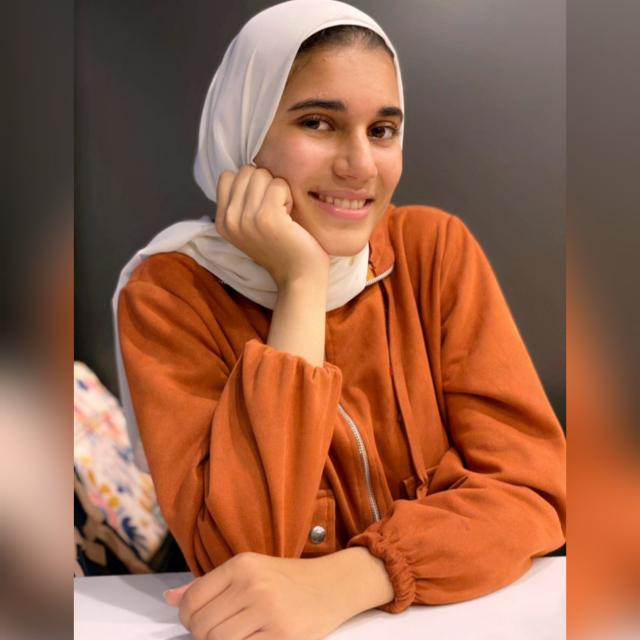

Mayar Hassan Menessy
Egypt, Alexandria, New Borg El Arab.
Phone: +201278179958
Email: mayarmenessy@gmail.com
LinkedIn
Objective
I am a computer science student who wants to develop her technical skills,
seeks to work professionally by Appling her soft skills and contributes at labor market.
Education
- Bachelor’s degree at computer science, SIM (Software Industry and Multimedia) department, faculty of science, Alexandria university. 2020-2024[CGPA 2.9212]
- Thanawia A’maa 2020: science-science 96.2%
Elshahid Mahid ElHawary high school 2017-2020
- School of Continue Education (SCE)
at American University in Cairo (AUC) 2020-2024
Skills
• Technical skills
- Programming concepts: OOP / Data Structure / web development
(HTML-CSS-JavaScript-PHP-SQL)
- Programming languages: JAVA/python/C++/C#/ prolog
- Programs: Unity/ Adobe After Effect/Prolog/Vcode/ Oracle/ Adobe XP/ NetBeans/CodeBlocks
- Microsoft Office programs
-IoT and embedded Linux
• Soft skills
- Leadership - Communication - Negotiation -Problem-solving
- Presentation - Project management - Teamwork
Languages
Arabic: mother tong
English: B2
French: A2
Germany: A1
Courses
-Cybersecurity CrashCourse from sprint platform online 2022
-Artificial Intelligence CrashCourse from sprint platform online 2022
-Agile CrashCourse from sprint platform online 2022
English courses from the American University in Cairo, school of continuing education
February 2021 – July 2024
Work/Internship/Training experience
- Trainee at NXplorer training from Shell company with Nahdet El Mahrousa, Cairo, Online Zoom from February 2021 to May 2021
The training was using a unique method of thinking. They use a unique combination of three methodologies
-systems thinking a framework for seeing the bigger picture rather than isolated fragments
-Scenario planning which asks ‘what if’ questions to explore alternative views of the future and create plausible stories around them.
-Theory of change is a methodology of thinking that images how and why a certain change is expected to happen.
Finally, we applied all these things very well and present our final scenario.
Worked with a team For Imagine Future competition and reached the semi-finals.
- Trainee at Aspire Training Solutions Company (2021-2024), Cairo, Online Zoom
This is training to develop soft skills focused on leadership skills
- Trainee at Alex-Sci ICPC Community from May 2021- August 2022, Online and at the faculty of science
ICPC is an international competition in problem-solving using programming languages.
I worked with a team consisting of three members to participate in the competition in August 2021 for the first time but unfortunately,
we didn’t qualify for the finals. So, I complete training to participate again in August 2022.
Community service/ Extracurricular Activities
- Semicolon project
Project Manager from February 2022
Vice head technical committee From April 2021 to Feb 2022
“Semicolon Project” is a Non-profit Project Represented by SAFWA SCIENCE at faculty of science and at ElHoria and Creativity center at Alexandria.
Achievements
-Full scholarship from USAID and cooperation with American University in Cairo (AUC), cohort 1
-won 10th place at the knights of reading competition at the Alexandria governorate level and qualify to participate in the finals in Cairo,
but I did not travel at that time. 2019
Personal info
Marital Status: Single
Personal interests
From time to time, I like reading. But in my free time, I get relaxed. It differs sometimes listening to music, and sometimes reading poems and listening to poets and their way of reading. At other times I love traveling and spending days with my family. Loving to make fun crafts or videos and comics. Doing sports like swimming and walking. Interested to know about new and modern technologies. Interested in scientific research and Environmental challenges.